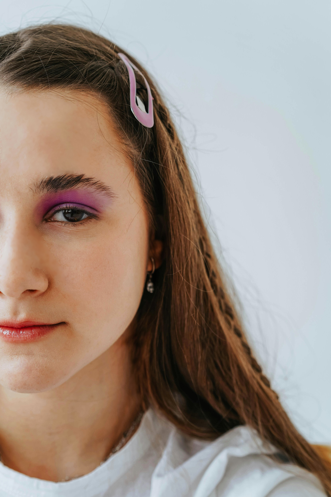
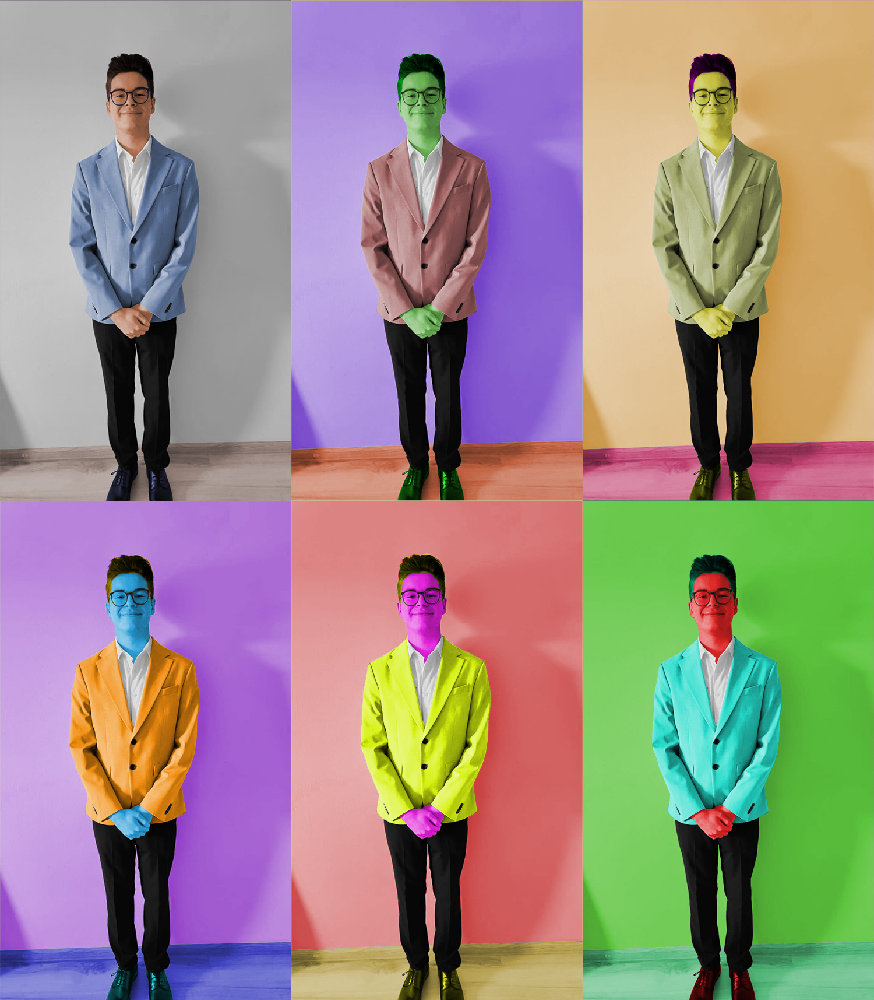
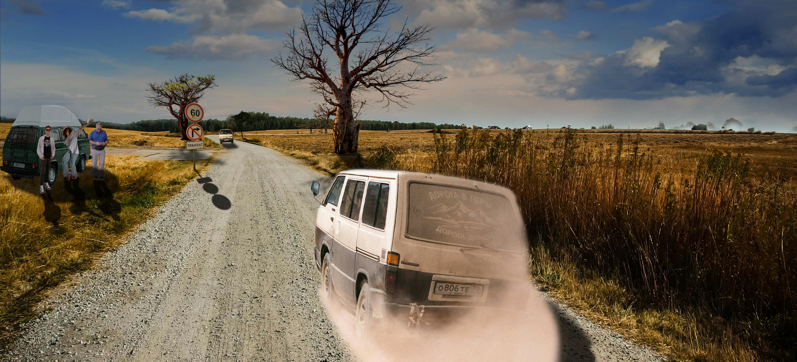

Vježbe u kojima je trebalo napraviti vlastiti font napravljene su u programu FontForge.
Vježbe u kojima je trebalo napraviti vektorsku grafiku napravljene su u Inkscapeu.
Vježbe su napravljene u Photoshopu.
  Vježbe su napravljene u Shortcutu i Notepad++.